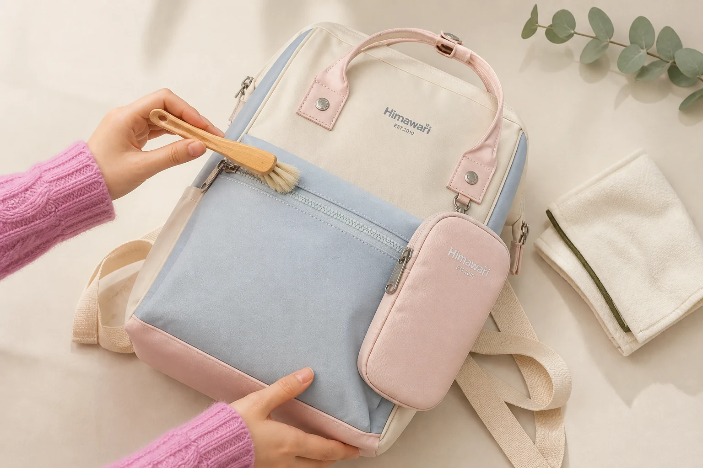

지퍼가 매끄럽지 않을 때 먼저 볼 것

백팩의 지퍼를 닫다가 한 지점에서 멈추면 같은 방향으로 더 당기고 싶어집니다. 그 전에 가방 안에 무엇을 추가했는지와 여밈 가까이에 원단이 접힌 곳이 있는지를 봅니다. 새 파일을 넣은 뒤 입구가 벌어진 상태인지, 얇은 옷자락이 지퍼 옆에 남았는지에 따라 할 일이 달라집니다. 내용물의 배치를 바꾸는 일과 부품을 수선하는 일은 구분할 수 있습니다. 현재 모양을 알면 어느 지점을 상담해야 할지도 구체적으로 남습니다.
지퍼 제조사 YKK의 FAQ는 원단이 슬라이더에 걸릴 수 있다는 점과 여닫을 때 끼임을 피하도록 설명합니다. 이 일반 설명이 히마와리 제품에 YKK 부품이 들어갔다는 뜻은 아닙니다. 제품별 조작과 관리 방법은 해당 가방의 설명을 따르고, 윤활제나 부품 교체는 허용된 범위를 알아본 뒤 결정합니다. 그 범위 안에서 사용자가 할 수 있는 관찰은 내용물을 비운 상태와 채운 상태를 비교하고 눈에 보이는 접촉 위치를 찾아보는 것입니다.
가득 찬 상태와 빈 상태의 차이
책과 파일을 넣은 뒤 두꺼운 파우치를 입구 쪽에 추가한 상황을 가정해봅니다. 가방을 닫기 위해 파우치를 눌러야 한다면 먼저 그 묶음을 꺼내놓습니다. 내용물을 줄인 상태에서 여밈 주변의 모양을 보면 무엇이 입구를 벌리고 있었는지 알 수 있습니다. 파우치를 다른 위치에 둘지 별도로 운반할지는 전체 짐을 놓고 판단합니다. 특정 제품의 지퍼가 이 구성에서 정상적으로 움직인다는 보장은 아니며, 물건을 추가하기 전과 후의 조건을 나누어 살피는 예시입니다.
새 물건을 뺀 뒤에도 같은 위치에서 움직임이 달라진다면 지퍼 양 끝과 그 지점의 원단을 봅니다. 실이나 작은 종이가 눈에 보이는지, 안감이 여밈 옆으로 접혀 있는지 기록할 수 있습니다. 보이지 않는 틈을 날카로운 도구로 긁거나 부품을 억지로 벌리지 않습니다. 제품 설명에서 처리 방법을 찾을 수 없다면 현재 위치의 사진과 함께 문의합니다. 어디에서 멈추는지와 내용물을 비웠을 때도 같은지를 알아두면 문제를 넓게 추측할 필요가 줄어듭니다.
몸에 멘 상태에서는 뒤쪽 접촉 위치를 보기 어렵습니다. 가방을 안정된 면에 놓고 여밈이 보이는 방향으로 돌리면 주변 원단과 물건의 위치를 따로 볼 수 있습니다. 얇은 겉옷이나 파우치 손잡이가 입구 밖에 남았다면 다음에 담을 때 안쪽으로 정리할 이유가 생깁니다. 손에 들고 있던 열쇠나 개인 장식이 지퍼 손잡이와 같이 움직였는지도 살펴볼 수 있습니다. 사용하는 순서에서 생긴 접촉과 부품 자체의 상태를 나누어 생각하면 됩니다.
점검할 제품 예시로 Himawari No.124S 제품 정보를 참고할 수 있습니다. 현재 가방에서 실제로 있는 여밈과 연결 부위를 대조하고 문의할 면을 남깁니다. 지퍼와 버클이 비슷해 보여도 다른 모델에서 쓰던 조작을 바로 적용하지 않습니다. 실제 부품을 여닫는 방법과 가방에 물건을 담는 순서가 어떤지 연결해 보는 방식입니다. 개인적으로 단 장식이 있다면 원래 구성과 나누어두고 움직임에 영향을 주는 위치인지 살펴볼 수 있습니다.

버클과 고리는 각각의 물건
버클이 있는 가방이라면 양쪽 부품이 현재 어느 상태인지 따로 봅니다. 서로 다른 위치의 부품을 급히 맞물리게 하려 하지 않고 안내된 결합 짝과 방향을 읽습니다. 개인 소품을 연결했던 고리도 원래 부품인지 추가한 것인지 구분합니다. 눈에 띄는 변형이나 빠진 부분이 있다면 어느 부위인지 사진에 남길 수 있습니다. 지금 가진 가방에서 직접 보이는 구성만 대상으로 삼아야, 제품에 없는 기능을 기대하거나 비슷한 부품으로 교체할 수 있다고 짐작하지 않습니다.
부자재 주변에 먼지나 작은 조각이 남았다면 마른 정리와 별도 세척의 범위를 나눕니다. 제품에서 허용한 도구를 쓸 때에도 원단과 부품에 어느 면이 닿는지 봅니다. 한 부분을 정리한 뒤 남은 흔적을 계속 같은 방식으로 문지르기보다 종류가 다른지 판단할 수 있습니다. 윤활이나 세정이 필요한지 확실하지 않다면 먼저 문의할 상태를 남깁니다. 여러 제품을 차례로 적용한 뒤 원인을 찾는 것보다 처리 전 모습을 알고 있는 편이 상담할 조건이 분명합니다.
문의할 기록과 사용 전의 정리
상담에 남길 정보는 길 필요가 없습니다. 가방의 모델, 움직임이 달라진 지점, 그때 담았던 물건, 내용을 비운 뒤에도 같은지 정도를 적을 수 있습니다. 직접 처리한 것이 있다면 사용한 도구나 제품을 함께 남깁니다. 원인을 먼지나 특정 습관으로 확정하기보다 현재 조건을 설명하는 자료입니다. 수선과 부품 교체가 가능한지는 해당 판매처의 설명을 확인합니다. 요청한 답변이 어느 제품과 부위를 대상으로 하는지도 대조하면 다음 단계가 분명해집니다.
다시 사용할 준비를 할 때에는 입구 가까이에 놓일 물건을 봅니다. 파일의 모서리와 파우치 손잡이, 옷자락이 여밈을 따라 튀어나와 있지 않은지 정리합니다. 자주 꺼내는 작은 소지품은 전체 공간을 크게 열지 않아도 되는 묶음으로 둘 수 있습니다. 그렇다고 열린 포켓에 그대로 드러내둘 필요는 없습니다. 본인이 찾을 위치를 알고 사용 뒤 닫는 순서가 있어야 합니다. 어느 물건을 넣은 뒤 입구 모양이 달라지는지도 기록할 수 있습니다.
같은 지점의 움직임이 반복해서 달라진다면 더 강하게 시험하지 않고 앞서 남긴 조건과 상담 내용을 대조합니다. 짐을 바꾼 날에도 같은지, 안내받은 처리 뒤 어떤 상태인지 설명할 수 있습니다. 해결한 부분이 내용물의 배치였다면 그 위치를 기억해 다음 준비에 반영합니다. 부품 수선이 필요하다면 가방 정리와 다른 작업으로 남습니다. 백팩을 닫는 마지막 동작은 손잡이를 끝까지 당기는 목표보다 물건과 원단이 제자리에 있는 상태에서 안내된 방식으로 여밈을 쓰는 일입니다.